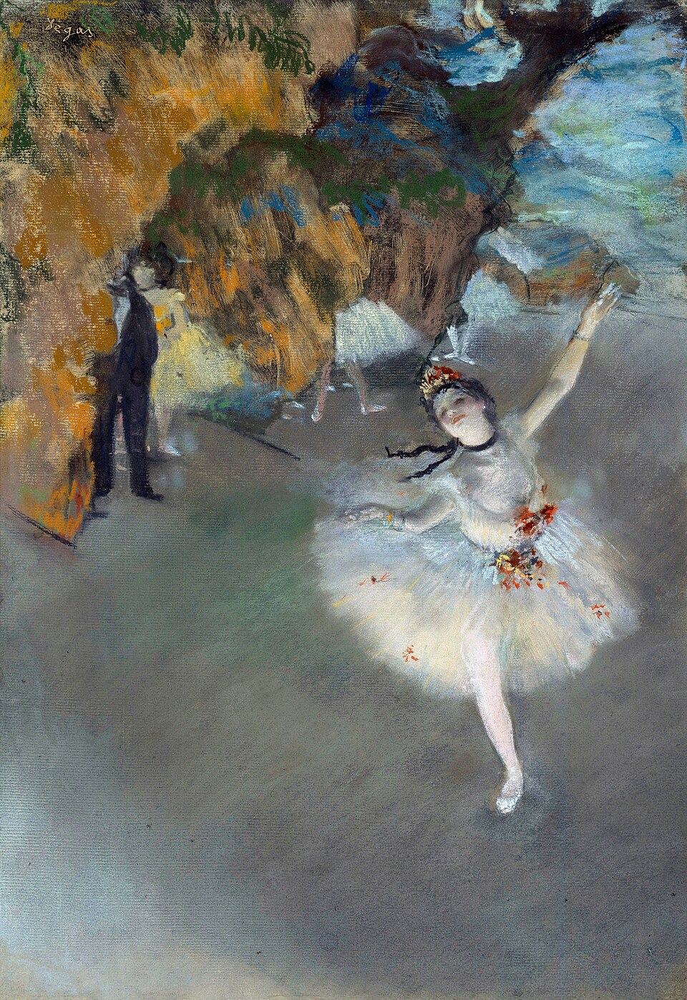

芭蕾（明星） Ballet (The Star)
德加 · 约1876–1877年 · 巴黎奥赛博物馆
Edgar Degas · c. 1876–77 · Musée d'Orsay, Paris
图片：Wikimedia Commons，公有领域 / Image: Wikimedia Commons, public domain

发现 · Discover
舞台中央 Centre stage
一位芭蕾舞者独自在舞台上，张开双臂，单脚站立，好像正在谢幕。
A ballerina dances alone on stage, arms open, balanced on one foot, as if taking her bow.
从高处看 From above
我们像是坐在高处的包厢里，从上往下看着舞台。
We seem to look down on the stage from above, as if from a box high in the theatre.
侧幕里 In the wings
侧幕里还有几位舞者在等候，只露出半个身子。
In the wings, other dancers wait, only half visible.
穿黑衣的男人 The man in black
侧幕里站着一个穿黑衣的男人，脸被布景挡住了。他是谁，画里没有说。
A man in black stands in the wings, his face hidden by the scenery. The painting doesn't tell us who he is.
单版画上的粉彩 Pastel over monotype
德加先在金属板上画好，压印出唯一的一张“单版画”，再在上面用粉彩上色。
Degas first painted on a metal plate and pressed it onto paper to make a single print, a monotype, then worked over it in pastel.
卡耶博特的收藏 From Caillebotte's collection
这幅画也曾经属于卡耶博特。1896年，它随他的遗赠进入了法国国家收藏。
This work also belonged to Caillebotte. In 1896 it entered the French national collection as part of his bequest.
故事 · The story
舞台上的一刻 A moment on stage
德加画过很多次芭蕾舞者。这一幅，他把镜头对准了舞台中央独舞的那一刻。
Degas painted ballet dancers many times. Here he focuses on a single moment: a dancer alone at centre stage.
约1876–1877年 · 巴黎奥赛博物馆 / c. 1876–77 · Musée d'Orsay, Paris
舞台和幕后 Stage and wings
画面同时有舞台上的光彩，和侧幕里的等待。舞台中央的明星，和侧幕里看不清脸的人，出现在同一幅画里。
The picture holds both the glamour of the stage and the waiting in the wings: the star at centre stage, and figures in the wings whose faces we cannot see.
约1876–1877年 · 巴黎奥赛博物馆 / c. 1876–77 · Musée d'Orsay, Paris
卡耶博特的收藏 Caillebotte's collection
这幅画属于卡耶博特。1896年，它随他的遗赠进入法国国家收藏；1986年起，收藏在奥赛博物馆。
It belonged to Caillebotte. In 1896, it entered the French national collection with his bequest, and since 1986 it has been at the Musée d'Orsay.
约1876–1877年 · 巴黎奥赛博物馆 / c. 1876–77 · Musée d'Orsay, Paris
舞台中央，只有一个人。 At centre stage, just one dancer.
作品档案 · Artwork record
| 画家（生卒年） · Artist (dates) | 埃德加·德加（1834–1917） / Edgar Degas (1834–1917) |
|---|---|
| 画名 · Title | 芭蕾（明星） / Ballet (The Star) |
| 年份 · Date | 约1876–1877年 / c. 1876–77 |
| 材质 · Medium | 单版画上的粉彩 / Pastel over monotype |
| 尺寸 · Dimensions | 58.4 × 42 cm |
| 收藏地 · Collection | 巴黎奥赛博物馆（卡耶博特遗赠，1896年由国家接收） / Musée d'Orsay, Paris (Gustave Caillebotte bequest, accepted by the State in 1896) |
关于画家 · About the artist
埃德加·德加（1834–1917），法国画家，生于巴黎。他参加了印象派画展，以描绘芭蕾舞者著称。
Edgar Degas (1834–1917) was a French painter, born in Paris. He took part in the Impressionist exhibitions and is best known for his paintings of ballet dancers.